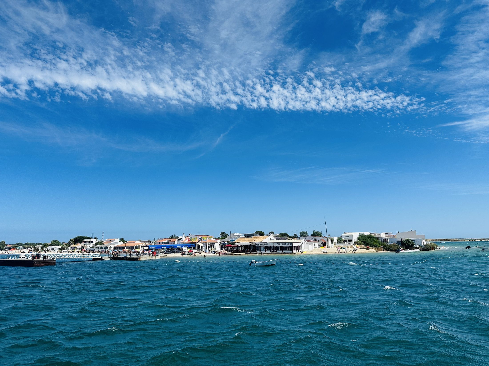
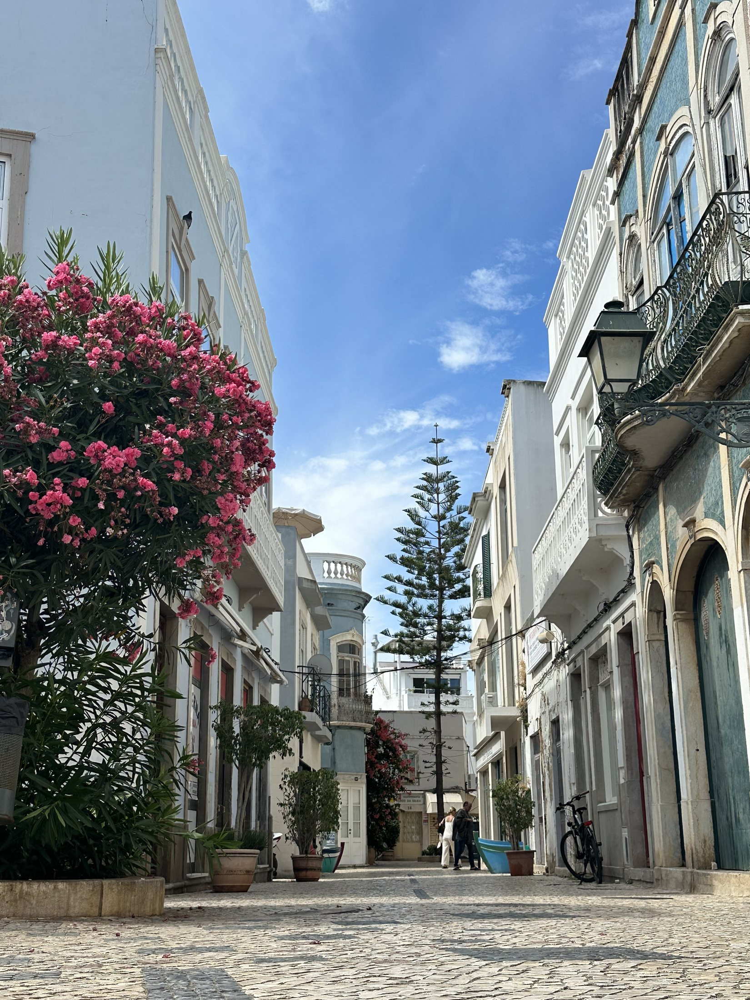
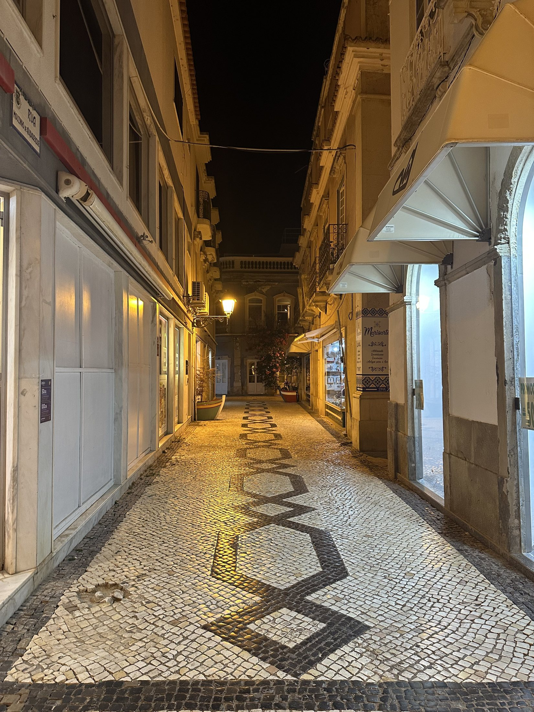
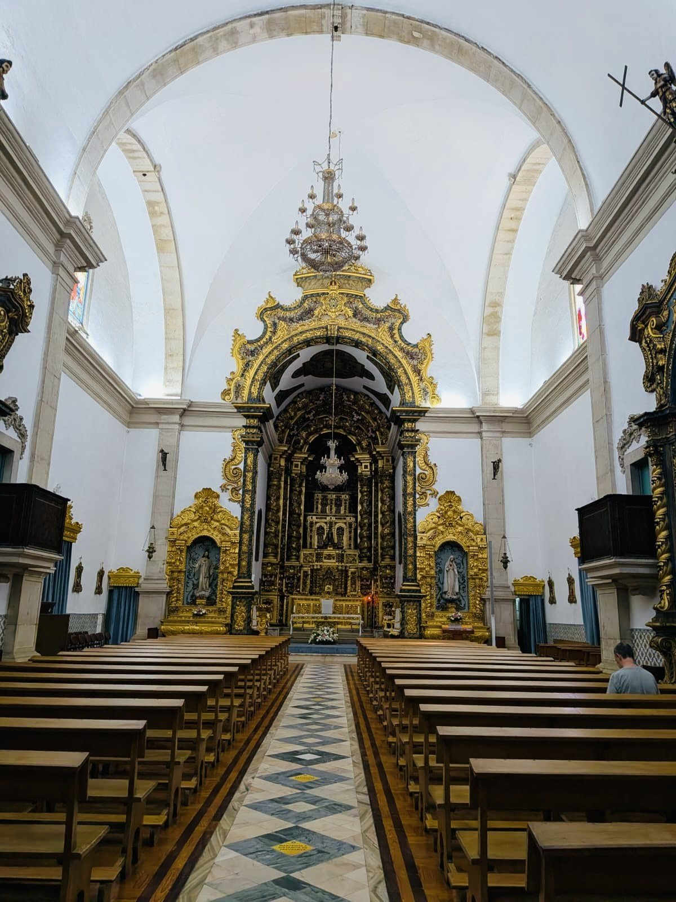
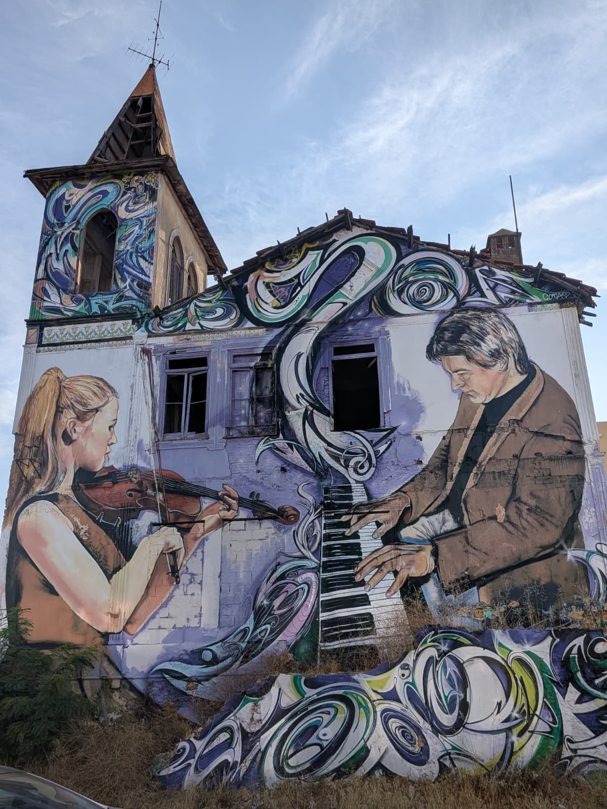
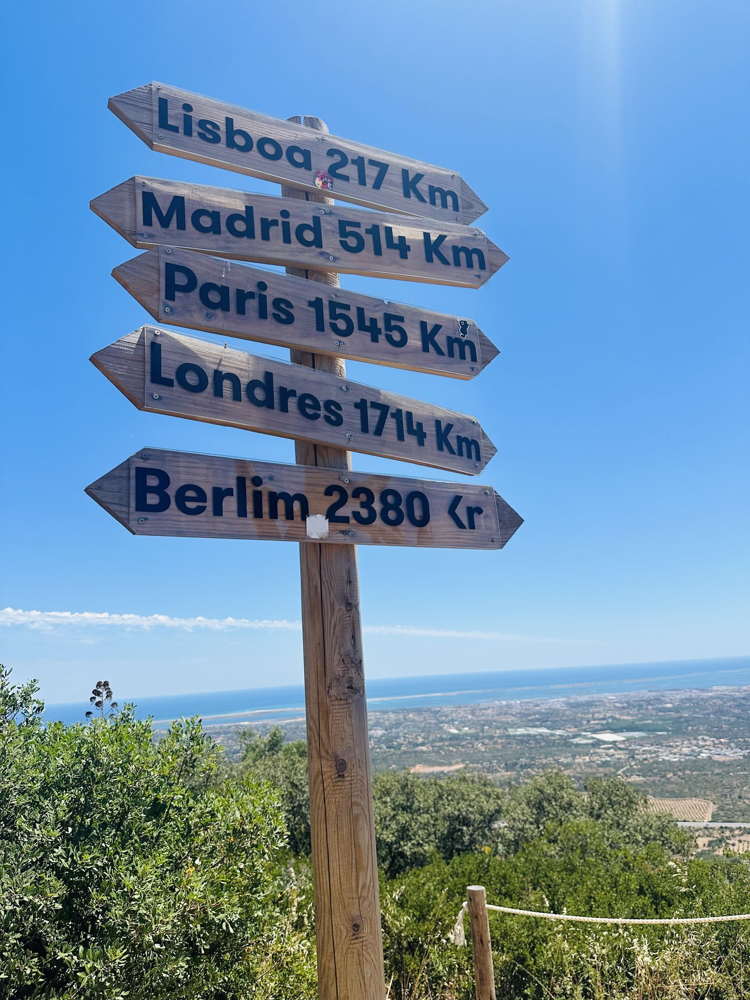
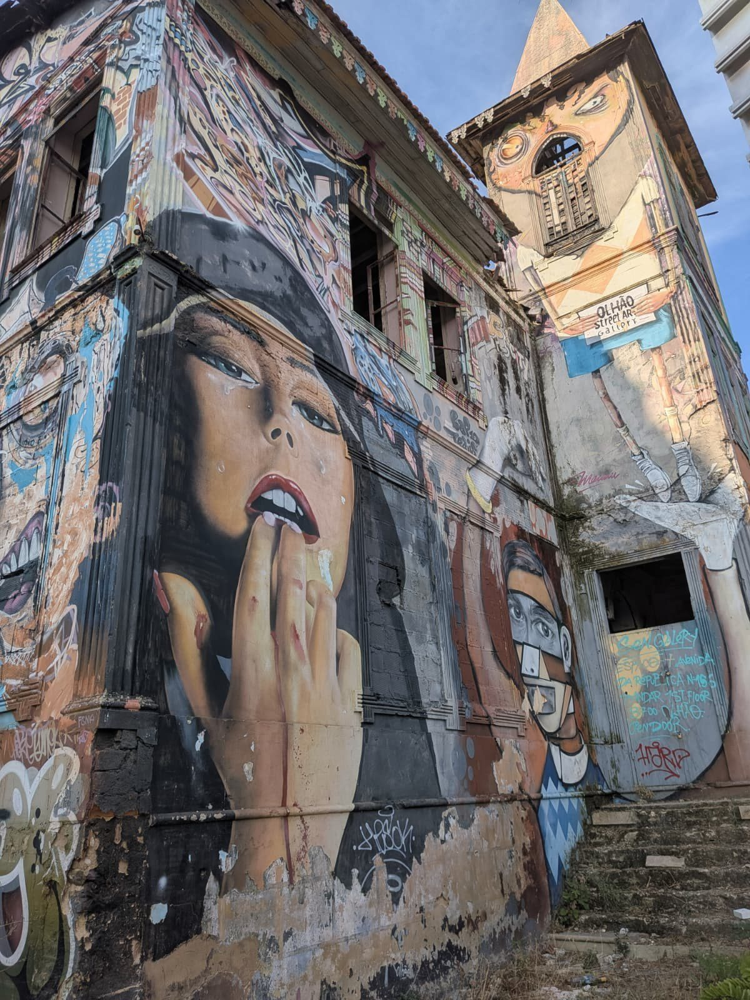

Ria Formosa & the islands
Take the ferry from the waterfront for wide-open lagoon views, island beaches and an easy day by the sea.
Casa Rei Azul places you in Olhão city centre, close to the waterfront, the famous market halls and ferries into the Ria Formosa.

Take the ferry from the waterfront for wide-open lagoon views, island beaches and an easy day by the sea.

Wander through whitewashed lanes, tiled façades, blue doors and bursts of bougainvillea.

The old town takes on a different atmosphere after dark, with restaurants and cafés close at hand.

Step inside Olhão’s historic parish church, one of the landmarks at the heart of the old town.

Discover murals and creative details tucked into the streets around the centre.

Head inland to the Miradouro do Cerro de São Miguel for far-reaching views across the coast.

Colourful large-scale art adds another layer to Olhão’s distinctive character.
Use Casa Rei Azul as a base for Faro old town, Tavira, the eastern Algarve and longer coastal days towards Vale do Lobo, Albufeira or Lagos.
Old town, marina, restaurants and the airport are a short drive away.
One of the Algarve’s most elegant towns, with river views, Roman bridge and island beaches.
Vale do Lobo, Albufeira and Lagos are possible day trips for beaches, golf, restaurants and coastal scenery.
Stay central, explore the coast, and come home to the rooftop.